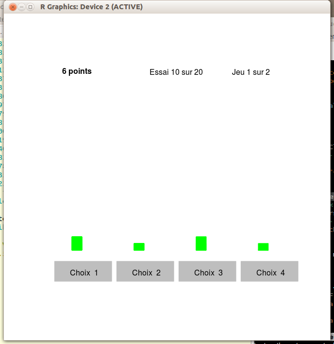
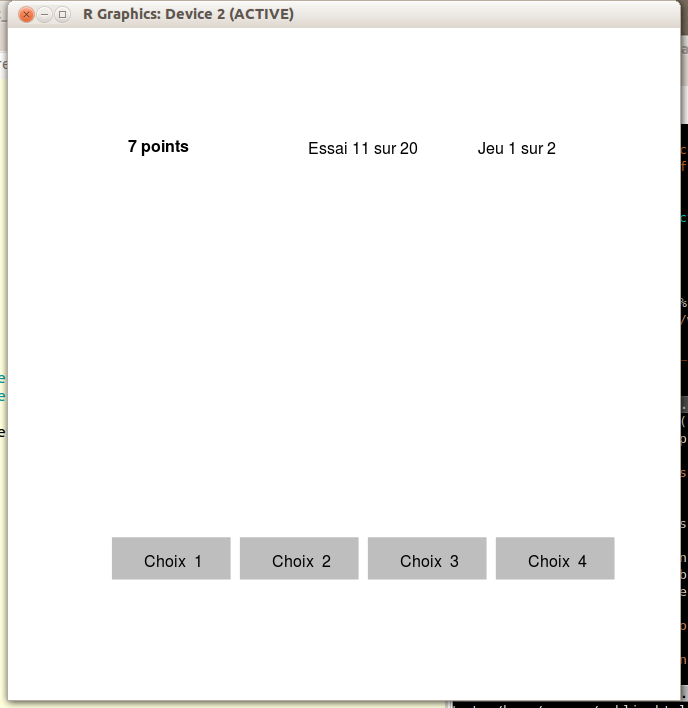

On s'intéresse au même problème que précédemment. Cependant, l'expérience est maintenant réalisée en donnant beaucoup moins d'information au joueur. On va réaliser la même expérience que précédemment dans deux contextes différents. Le but des manipulations est ensuite de comparer vos performances.
L'interface indique maintenant seulement les succès. Elle a l'aspect suivant :

Les barres vertes indiquent les succès. Vous avez également le nombre de succès total obtenu durant l'épreuve courante. La somme des hauteurs des barres vertes égale ce nombre de succès.
Réalisez l'expérience. Pour cela, dans R, tapez la commande : source ("http://www.grappa.univ-lille3.fr/~ppreux/ensg/aeac/tps/bandits/4bras.Steyvers-et-al.success-info.R")
L'interface a maintenant l'aspect suivant :

Seul le nombre de succès total obtenu durant l'épreuve courante est indiqué.
Réalisez l'expérience. Pour cela, dans R, tapez la commande : source ("http://www.grappa.univ-lille3.fr/~ppreux/ensg/aeac/tps/bandits/4bras.Steyvers-et-al.almost-no-info.R")
Il est intéressant de refaire la toute première expérience également pour voir si votre performance a changé.
La première de ces 2 expériences a créée un fichier dénommé 4bS.res.xxx.yyy.FALSE.TRUE.TRUE.txt, la seconde un fichier dénommé 4bS.res.xxx.yyy.FALSE.FALSE.TRUE.txt.
Merci de m'envoyer ces deux fichiers par email.
Ces deux fichiers ainsi que le fichier dénommé 4bS.res.xxx.yyy.txt créé lors de la première expérience ont exactement la même structure ; de plus, pour pouvoir comparer les résultats entre les 3 expériences, les probabilités de succès sont les mêmes ; seule l'interface a changé, vous donnant de moins en moins d'information. On peut donc comparer le nombre de succès à chaque jeu et à chaque essai.
Il est tentant de comparer vos performances entre ces 3 expériences. Vous pouvez charger les deux nouveaux fichiers dans deux data.frame pour pouvoir les analyser dans R et les comparer.